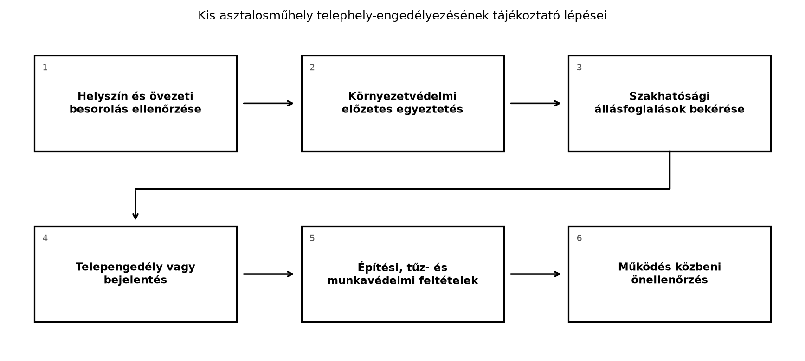

Képzeld el, hogy egy kis asztalosműhelyben reggel hatkor már szalad a gyalugép, az udvaron vékony, sárgás por ül a szomszéd kerítésén, és a felületkezelő oldószer szaga az utcán is érződik. A tulajdonos nem akar rosszat, csak soha nem gondolta végig, mit bocsát ki a műhelye. Ebben az alfejezetben azt tanulod meg, milyen környezeti hatásokat kell csökkenteni ahhoz, hogy egy műhely a szomszédokkal, a településsel és a szabályokkal együtt tudjon működni.
Nézz a műhelyre úgy, mint egy kis gyárra, amelyben anyag érkezik be, termék jön ki, és közben melléktermék keletkezik. A beérkező nyersanyag a fűrészáru, a lapanyag, a ragasztó, a lakk, az oldószer, a csiszolóanyag. A kimenő termék az asztal, az ajtó, a beépített bútor. A melléktermék viszont a fűrészpor, a csiszolópor, az oldószergőz, a zaj, a hulladék, a maradék ragasztó és a szennyvíz. Ha ezt a mérleget tudatosan kezeled, akkor a műhely környezete tiszta, csendes és biztonságos marad. Ha nem, akkor a szomszéd panasza előbb-utóbb hatósági ellenőrzést hoz, és az a munkát is leállíthatja.
A természetben az anyag és az energia körforgásban van. A faipar is a természetből veszi a faanyagot, ezért a fenntartható működés azt jelenti, hogy a fát legális, ellenőrzött forrásból szerezzük be, és a hulladékot, a port, a gőzt, a zajt nem engedjük vissza korlátlanul a környezetbe.
Definíció. A környezetvédelem a természeti és épített környezet értékeinek megőrzésére, a szennyezés megelőzésére és csökkentésére irányuló tevékenység. A környezeti hatás egy tevékenység által a környezetben okozott változás. A kibocsátás (emisszió) a forrásnál mérhető szennyezőanyag-mennyiség, például a szórófülke kifúvásából távozó oldószergőz. A terhelés (immisszió) a környezetben megjelenő koncentráció, például a szomszéd udvarán mérhető pornak vagy zajnak a szintje.
A faipari műhely legfontosabb környezeti terhelései:
A faipari műhely legtöbb vize nem önthető egyszerűen a lefolyóba. A lakk, a pác, az oldószer és a lúgos tisztítószer a csatornába jutva mérgezheti a szennyvíztisztító biológiáját, az élővízbe jutva pedig közvetlenül károsítja az élőlényeket.
Szabály. Tilos felületkezelő anyagot, oldószert, olajat, festéket, ragasztót, lúgot, savat, valamint a velük szennyezett mosóvizet a közcsatornába, élővízbe, csapadékcsatornába vagy a talajra engedni. A veszélyes folyadékokat zárható edényben, kármentő tálcán kell tárolni, és veszélyes hulladékként kell leadni (ellenőrizendő: hulladékgazdálkodási jogszabály).
A gyakorlatban ez azt jelenti, hogy a felületkezelő-helyiségben legyen egy zárható veszélyeshulladék-gyűjtő, legyen kármentő tálca a hordók alatt, és a takarításhoz használt oldószeres rongyot ne dobjuk a kommunális szemétbe, hanem külön, tűzálló, fémből készült edényben gyűjtsük.
A poros elszívó levegőjét sem szabad úgy a szabadba engedni, hogy a port a szomszéd udvarára hordja a szél. A szűrőből kikerülő tisztított levegőt is rendszeresen ellenőrizni kell, és a szűrőzsákot vagy patronos szűrőt ki kell tisztítani.
A faport a munkavédelmi fejezet munkahelyi por-expozícióként tárgyalja. A környezetvédelmi oldal az, hogy a műhelyből kikerülő por a szomszédos ingatlant is terhelheti. A keményfa-por, például a tölgy- vagy bükkpor, már emberi egészségi kockázatot hordoz, ezért a levegőbe kerülést műszaki eszközökkel kell csökkenteni: elszívó berendezés, szűrő, zárt ajtó, a gépek elhelyezése beltéren.
Az oldószergőz, pontosabban VOC, a pácoló, lakkozó, ragasztó és hígító anyagokból származik. Minél magasabb az anyag oldószertartalma, annál több illékony szerves vegyület kerül a levegőbe. A modern vízbázisú lakkok és diszperziós ragasztók kevesebb oldószert bocsátanak ki, ezért környezetbarátabbak. Az oldószerhasználatra és a VOC-kibocsátásra küszöbértékhez kötött előírások vonatkozhatnak (ellenőrizendő: VOC-rendelet).
Szabály. A levegőbe kibocsátott por és oldószergőz mennyiségét a levegővédelmi előírások szerint korlátozni kell. A pontosan meghatározott határértékek tevékenységtől, berendezés típusától és elhelyezkedéstől függnek (ellenőrizendő: levegővédelmi jogszabály, kibocsátási határértékek). A szórófülke elszívását szűrővel vagy aktív szenes rendszerrel kell ellátni, ha a kibocsátás ezt indokolja.
A festékes, lakkos dobozok és a hígítós edények tárolásakor is ügyeljünk, hogy a gőz ne szivárogjon folyamatosan a műhely levegőjébe. Az edényeket használat után azonnal zárjuk le, és a hulladékot zárható gyűjtőben tartsuk.
A talaj láthatatlanul szennyeződik. Egy kifolyt csepp olaj vagy oldószer lassan leszivárog, és szennyezheti a talajvizet. A faipari üzemben ezért a veszélyes folyadékok tárolására és áttöltésére mindig kármentő tálcát kell használni, amely felfogja a kifolyó anyagot. A gépek alatt is lehet tálca, ha hidraulikaolaj vagy kenőanyag csöpöghet.
A talajvédelemhez tartozik az is, hogy az üzemi padló legyen tömör, például beton, hogy a kiömlött anyagot azonnal fel lehessen itatni. A felitatott olajos, oldószeres anyagot tilos a kommunális hulladékba dobni; azt is veszélyes hulladékként kell leadni.
A faipari gépek hangosak. A zaj egy része a gépteremben marad, más része a falon, az ablakon, a nyitott kapun át kijut a szomszédos ingatlanokra. A munkavállaló zajterhelését egyéni hallásvédővel csökkentjük, de a szomszédot nem lehet hallásvédővel megvédeni. Ezért a környezeti zajt műszaki és szervezési intézkedésekkel kell csökkenteni.
Szabály. A környezeti zaj- és rezgésterhelésre a hatályos környezetvédelmi és zajvédelmi előírások vonatkoznak. A határértékek területi besorolástól, napszaktól és a védendő épület funkciójától függnek (ellenőrizendő: zajvédelmi jogszabály, helyi rendelet). A legfontosabb gyakorlati szabály: a gépeket lehetőleg beltérben, zárt ajtók és ablakok mellett üzemeltessük, a szabadban végzett fűrészelést, rakodást a pihenőidőre és az éjszakára kerüljük.
A zaj csökkentésének eszközei:
Ha valaki új asztalosműhelyt indít, vagy meglévő műhelyt bővít, ellenőriznie kell a telephelyre vonatkozó környezetvédelmi és települési szabályokat. Ez nem csak adminisztráció: a környezeti szempontok már a tervezéskor eldönthetik, hogy az adott helyszín alkalmas-e.
Szabály. Kis asztalosműhelynél jellemzően az ipari tevékenység bejelentése vagy telepengedélye szükséges a települési jegyzőnél (ellenőrizendő: hatályos kormányrendelet, a tevékenység besorolása). Környezeti hatásvizsgálat vagy egységes környezethasználati engedély csak nagy kapacitású üzemnél fordul elő (ellenőrizendő: küszöbértékek). Ha a műhely évente jelentős mennyiségű oldószert használ fel (pl. lakkozás), a VOC-kibocsátásra vonatkozó előírások is vonatkozhatnak rá (ellenőrizendő: oldószer-felhasználási küszöbérték, VOC-rendelet). A pontos besorolást az önkormányzat és a környezetvédelmi hatóság adja meg.
A telephely-engedélyezés jellemző, tájékoztató lépései egy kis asztalosműhelynél:

A lépések magyarázata:
Helyszín és övezeti besorolás ellenőrzése. A helyi építési szabályzat kimondja, milyen tevékenység folytatható az adott övezetben, milyen távolságra kell lennie lakóépületektől, és mekkora a megengedett zajszint. Ha a helyszín nem alkalmas, hiába vásároltuk meg a gépet.
Környezetvédelmi előzetes egyeztetés. A hatóság tájékoztat arról, szükséges-e környezeti hatásvizsgálat, vagy elég egyszerű bejelentés. Ehhez kell a műhely tervezett technológiája: gépek, elszívás, felületkezelés, anyagok.
Szakhatósági állásfoglalások bekérése. Tipikus szakhatóság a vízügyi, a levegőtisztasági, a hulladékgazdálkodási, a talajvédelmi, a népegészségügyi, a tűzvédelmi és az építésügyi hatóság. Mindegyik a saját területén vizsgálja a hatásokat.
Telepengedély vagy bejelentés. Kis telephely esetén gyakran elég a bejelentés, amelyben a tulajdonos nyilatkozik a tevékenység megfelelőségéről. A pontos eljárás települési és tevékenységi besorolástól függ (ellenőrizendő).
Építési, tűz- és munkavédelmi feltételek. A használatbavételhez a műhelynek meg kell felelnie az építési, tűzvédelmi, villamos biztonsági és munkahelyi követelményeknek.
Működés közbeni önellenőrzés. A környezetvédelem nem áll meg az engedély kiadásánál. Rendszeresen ellenőrizni kell az elszívót, a szűrőket, a veszélyes anyagok tárolását, a hulladékkezelést és a zajt, és a tapasztalatokat naplózni kell.
A hatósági eljárás idő- és költségigényét nem lehet általánosan megadni, mert sok egyedi tényezőtől függ. Fontos, hogy az asztalos ne saját maga próbálja meg kitalálni a besorolást, hanem kérjen előzetes tájékoztatást az önkormányzattól és a környezetvédelmi hatóságtól.
A faipar alaptétele, hogy a faanyag megújuló nyersanyag, de csak akkor, ha az erdőt fenntarthatóan kezelik. A fenntartható erdőgazdálkodás azt jelenti, hogy a kitermelt fát újratelepítik vagy a természetes felújulást biztosítják, és az erdő biológiai sokféleségét megőrzik.
Szabály. Az Európai Unióban a faanyag forgalomba hozatala legalitási igazoláshoz kötött. Az EUTR (EU timber regulation, későbbi EUDR, azaz EU deforestation regulation, ellenőrizendő a hatály) arra kötelezi a piaci szereplőt, hogy kellő gondossággal igazolja a faanyag származását, és ne hozzon forgalomba illegálisan kitermelt fát. Az FSC és PEFC önkéntes tanúsítási rendszerek, amelyek a fenntartható erdőgazdálkodásból származó faanyagot és annak feldolgozási láncát igazolják.
A gyakorlatban a tanúsított faanyag vásárlásakor a számlán vagy a szállítólevélen szerepel a tanúsítvány száma. A faanyagkereskedésben a legális forrás papírral igazolható, ezért a beszerzésnél érdemes megőrizni a származási dokumentumokat. A faipari hulladékok, fűrészpor és forgács szintén származhat legális, tanúsított forrásból, hiszen a teljes láncot nyomon kell követni.
Továbbvitt eredmény. A környezeti szempontok itt tanult rendszere – különösen a hulladékok, a veszélyes anyagok és a környezeti hatások csoportosítása – alapozza meg a Faipari hulladékok, veszélyes anyagok és a biztonsági adatlap alfejezetet. Ott a hulladékokat és a veszélyes anyagokat azonosítjuk, osztályozzuk, és a biztonsági adatlapot értelmezzük.
A környezetvédelmi állapotot rendszeresen ellenőrizd:
Eltérésnél a munkát az érintett helyen le kell állítani, és a hibát a műhelyvezetőnek jelenteni kell.
Egy kis műhely a település szélén, lakóházak közelében működött. A szomszéd panasza nyomán a hatóság helyszíni szemlét tartott. Kiderült, hogy a szalagfűrész elszívója közvetlenül a kerti kerítés felé fújta a port, a kompresszor a nyitott fészerben üzemelt, az oldószeres hordó pedig kint állt a földön, tálca nélkül.
A tulajdonos intézkedései:
A hatósági ellenőrzés után a szomszéd panasz megszűnt, a műhely pedig elkerülte a bírságot. A tanulság: a környezetvédelmi megfelelés nem csak előírás, hanem a jó szomszédi viszony alapja is.
1. feladat (A) Sorolj fel három faipari légszennyezőt, és írd le, milyen gépről vagy műveletről származhatnak.
2. feladat (A) Magyarázd meg röviden, miért tilos a lakkot vagy a pácot a lefolyóba önteni.
3. feladat (B) Egy műhely naponta 5 kg csiszolóport termel. (a) A szűrő hatásfoka 99 %. Mennyi por jut a levegőbe hetente (5 munkanap)? (b) A szűrőzsák kiszakadt, a leválasztás 70 %-ra csökkent. Hányszorosára nő a kibocsátás? A számítást mértékegységekkel végezd el!
4. feladat (B) Egy lakóövezettel szomszédos teleknél a műhely zajának határértéke nappal 50 dB, éjjel 40 dB (tájékoztató érték, ellenőrizendő). A műhely egyik gépe a telekhatáron kívül nappal 55 dB-t, éjjel 45 dB-t ad. Milyen intézkedést javasolj? Indokold!
5. feladat (C) Tervezz a műhelybe egy környezetvédelmi sarkot! Sorold fel, milyen edények, tárolók, feliratok és jelölések kellenek a veszélyes anyagokhoz, és magyarázd el, miért.
6. feladat (D) Készítsd el a műhely környezetvédelmi önellenőrző listáját legalább 8 ponttal! Minden pontnál írd be, ki és milyen gyakran ellenőrizze.
1. feladat
Lehetséges válasz: fűrészpor (körfűrész, szalagfűrész), csiszolópor
(széles szalagú csiszológép, kézi csiszoló), oldószergőz / VOC
(szórófülke, lakkozás, pácolás, ragasztás). Mindegyik a levegőt terheli,
ezért elszívással, szűréssel vagy anyagváltással csökkentendő.
2. feladat
A lakk és a pác oldószert, gyantát, színezéket és egyéb vegyi anyagokat
tartalmaz. A csatornába jutva mérgezheti a szennyvíztisztító
biológiáját, az élővízben pedig közvetlenül károsítja az élőlényeket. A
hulladékot veszélyes hulladékként kell leadni.
3. feladat
(a) A szűrő 99 %-ot köt meg, a levegőbe jutó hányad 1 %. Hetente a
képződő por:
;
ennek 1 %-a:
hetente (tájékoztató hatásfok (ellenőrizendő)).
(b) 70 %-os leválasztásnál a levegőbe jutó hányad 30 %:
hetente. A kibocsátás
-szorosára
nő, ezért a szűrőt azonnal javítani kell.
4. feladat
A megengedett zajhatár nappal 50 dB, éjjel 40 dB. A gép nappal 55 dB-t,
éjjel 45 dB-t ad a telekhatáron kívül. Ez azt jelenti, hogy nappal 5
dB-lel túllépi a határt, éjjel pedig 5 dB-lel. Javaslat: a zajos gépet
nappal, csukott ajtó és ablak mellett üzemeltetni, hangszigetelő falat
vagy burkolatot alkalmazni, a gépet karbantartani, kiegyensúlyozni, a
munkát a nappali időre ütemezni, és az éjszakai üzemet teljesen
beszüntetni.
5. feladat
A környezetvédelmi sarok tartalma:
6. feladat
Lehetséges önellenőrző lista (a gyakoriság műhelytől függ):
Minden pontnál az eltérést azonnal javítani kell, és a javítást a naplóban rögzíteni.
A faipari műhely környezeti hatásait négy fő területen kell kezelni: levegő, víz, talaj és zaj. A levegőt a fapor, a csiszolópor és az oldószergőzök terhelik, ezért elszívással, szűréssel és zárt edényzettel csökkentjük a kibocsátást. A vizet a lakk, pác, oldószer, olaj és mosóvíz szennyezheti, ezért ezeket tilos a csatornába, élővízbe vagy talajra engedni; veszélyes hulladékként kell leadni. A talajt kármentő tálcával, tömör padlóval és zárható tárolókkal védjük. A zajt a gépek zárt elhelyezésével, karbantartással, hangszigeteléssel és munkarenddel csökkentjük, különösen lakóövezetben. A telephely létesítése előtt ellenőrizni kell az övezeti besorolást, a környezetvédelmi besorolást és a szakhatósági állásfoglalásokat; a kis műhelyeknél gyakran elegendő a bejelentés, de a pontos eljárást mindig az önkormányzat és a hatóság adja meg. A fenntartható faanyagot az FSC és PEFC tanúsítás, a legális forrást az EUTR/EUDR kellő gondossági eljárása igazolja. Továbbvitt eredmény. Ezek a környezeti szempontok és a hulladék- és veszélyesanyag-azonosítás alapozzák meg a Faipari hulladékok, veszélyes anyagok és a biztonsági adatlap alfejezetet.